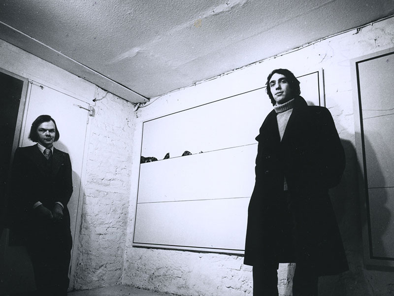
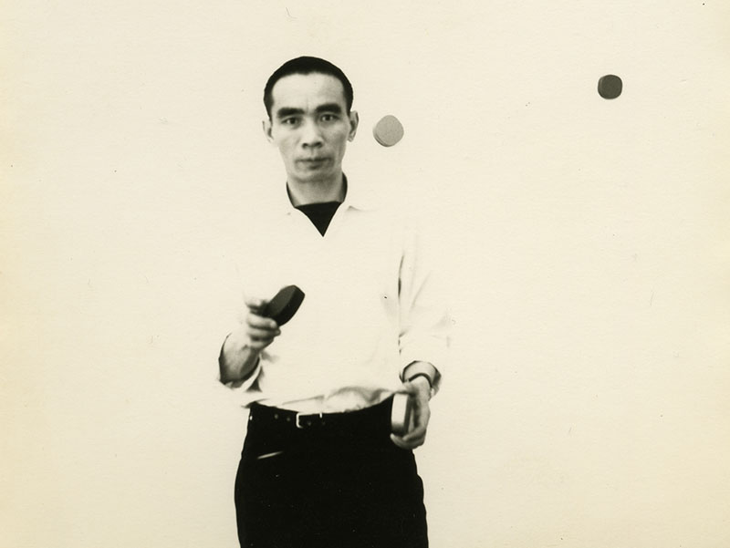
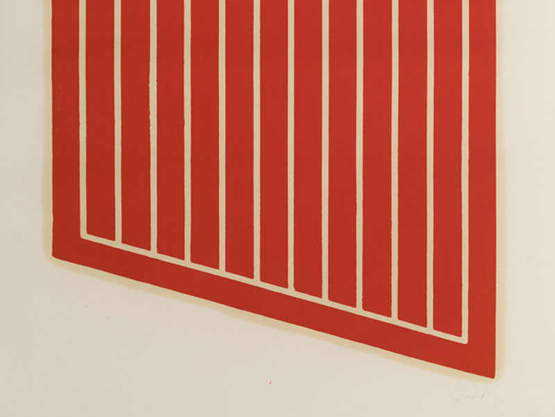
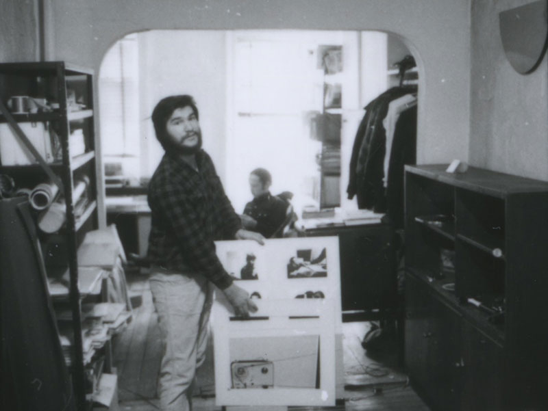
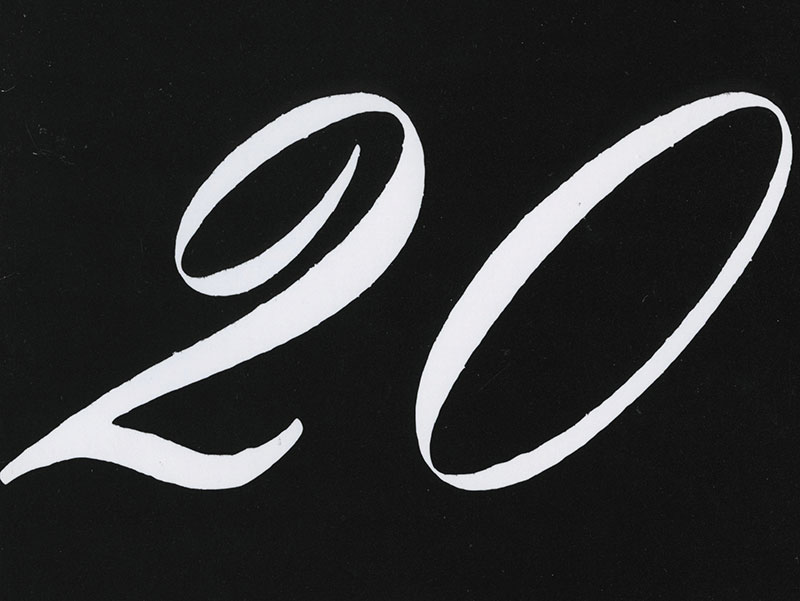
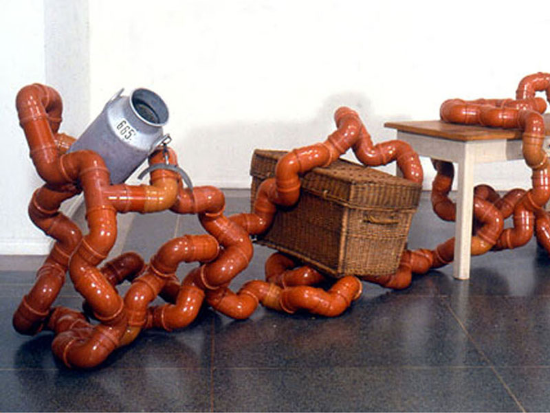
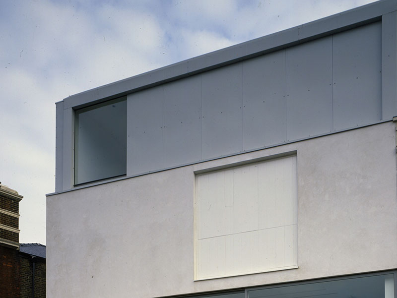
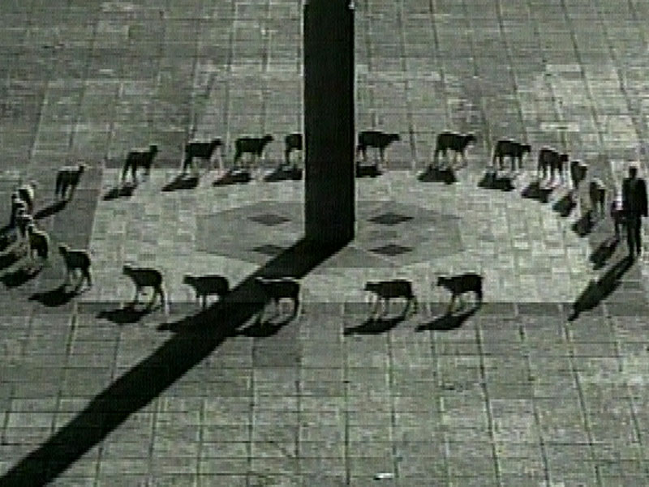
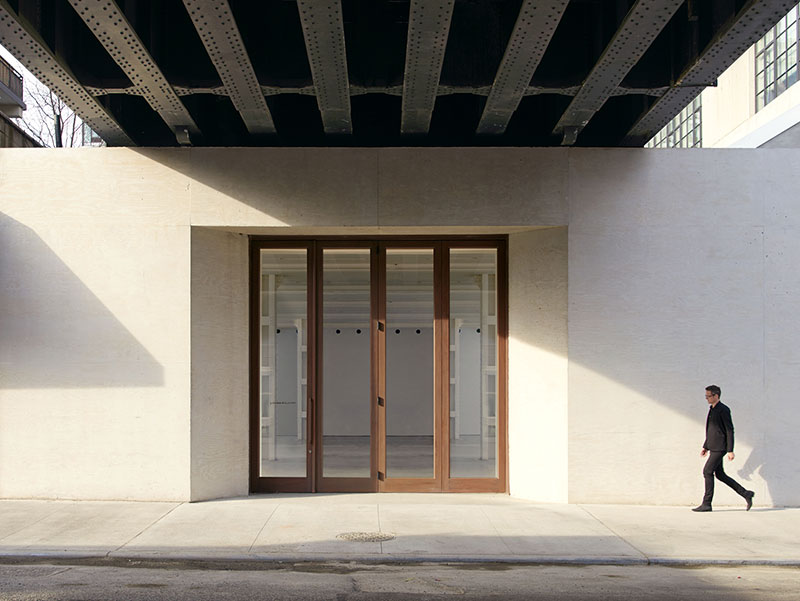
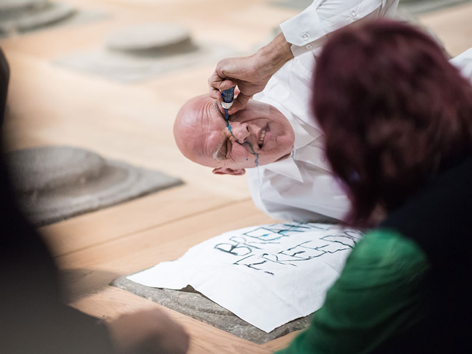

About
Lisson Gallery was founded in 1967 by Nicholas Logsdail. It was one of a small number of pioneering galleries in the UK, Europe and the United States to champion a generation of artists who were transforming the way art was made and presented, focusing on the idea or concept behind an artwork over expressive or descriptive aims. These young artists – including Sol LeWitt, Robert Mangold, Dan Graham, Donald Judd, Dan Flavin, Carl Andre, Lawrence Weiner, Art & Language, John Latham, Peter Joseph, Lee Ufan, Giulio Paolini, Daniel Buren - represented not a style but an attitude, an ethos concerning art’s place in a wider intellectual, cultural and social context.— The Art Newspaper interview by Anna Somers Cocks October 2008.
History
-
1967
Aged 21, Nicholas Logsdail renovates three floors of a derelict space in Bell Street with friends from the Slade School of Art, establishes Lisson Gallery
-
1967
Lisson Gallery opens its first exhibition of ‘paintings, graphics and sculpture’ on 4 April at 68 Bell Street in London, featuring work by Terence Ibbott, Derek Jarman, Paul Martin, Keith Milow and Paul Riley
-
1967
Within the gallery’s first year, Logsdail asks numerous international artists to exhibit, including Li Yuan-Chia, Mira Schendel, David Medalla and Dom Sylvester Houédard
-
1967
Yoko Ono invites Logsdail to visit her at home (via an instructional piece printed in later editions of Grapefruit) and presents her ‘Half-A-Wind Show’ at Lisson Gallery, from 11 October – 14 November
-
1970
After travelling to New York in 1968, Logsdail stages a joint London show of Donald Judd and Sol LeWitt (2 – 24 October), the first of many UK debuts for major American Minimal and Conceptual artists
-
1970
John Latham’s first solo show, ‘The Gallery Does Not Exist for 100 Years’ (4 November – 6 December), temporarily displaces the gallery to London Zoo and Hyde Park’s boating lake, among other venues
-
1970–71

Group exhibition ‘Wall Show’ gives 20 artists – including Sue Arrowsmith, Barry Flanagan, Roelof Louw, Blinky Palermo, John Stezaker, Lawrence Weiner and Richard Wentworth – one blank wall each to realise site-specific works
-
1972
Lisson Gallery continues to introduce British audiences to American artists such as Carl Andre, Dan Graham, Mel Bochner, Michael Asher and Robert Ryman
-
1973
Americans Robert Mangold and Dan Flavin are given inaugural London shows; Richard Long also has first exhibition with the gallery and shows at the British Pavilion of Venice Biennale three years later
-
1977
Logsdail takes British artists such as Art & Language, Peter Joseph, Bob Law, Richard Long and Stephen Willats to New York to show at the Fine Arts Building on Hudson Street (5 February – 1 March)
-
1982
Gallery stages Anish Kapoor’s first show. He is dubbed a ‘New British Sculptor’ alongside Tony Cragg, Richard Deacon, Shirazeh Houshiary and Julian Opie. A total of 12 Lisson artists appear in Documenta 7
-
1987
During its 20th anniversary year, the gallery begins the first phase of opening a second space on Bell Street, while also holding first exhibitions for sculptors Grenville Davey and Juan Muñoz
-
1988
Cragg represents Britain at the Venice Biennale and wins the Turner Prize in the same year, a feat repeated by Kapoor in 1990-91 (the award was not offered in 1990)
-
1991
A new permanent home at 52 Bell Street doubles the gallery’s footprint to 4,000 square feet. The space, designed with London-based architect Tony Fretton, opens on 9 November and marks 25 years of the gallery
-
1993
This year sees two major group shows featuring 100 artists. ‘Out of Sight Out of Mind’ highlights historical figures such as Bas Jan Ader and Gerhard Richter, while ‘Wonderful Life’ represents a younger generation, including Jason Martin, Damien Hirst and Martin Creed
-
1996
The gallery announces representation of Lee Ufan, continuing its support of artists across the world. Over five decades, global practitioners continue to join, from Tatsuo Miyajima, Christian Jankowski and Rashid Rana to Spencer Finch, Pedro Reyes, Liu Xiaodong and Wael Shawky
-
2000
An ambitious off-site exhibition takes place in Covent Garden from 28 April – 26 May, to coincide with the opening of Tate Modern. Videos by Francis Alÿs, Douglas Gordon, Rodney Graham, Jonathan Monk, Tony Oursler and others receive rave reviews
-
2000
‘A Shot in the Head’ continues Lisson Gallery’s commitment to curated summer shows, with live chickens, stripteases and tatooed prostitutes on display. Future summer shows curated by David Thorp, Stefan Kalmar, Emily Pethick and Raimundas Malašauskas.
-
2002
The inaugural exhibition at Lisson’s new gallery, 29 Bell Street, is an installation by Santiago Sierra, entitled Space closed by corrugated metal, which denies visitors any access to the space during its private view and for the first month
-
2009
Lisson Presents, a programme of on- and off-site exhibitions aiming to extend the legacy of curatorial innovation beyond the gallery walls, launches with a year-long schedule of exhibitions and performances introducing new artists
-
2010
Marina Abramović holds her inaugural show across both gallery spaces in London, revisiting some of her key historical 1970s performances, including all of the seminal Rhythm series, one of which is purchased by Tate
-
2011
Lisson Gallery opens its first international location in Milan with a group exhibition ‘I Know About Creative Block And I Know Not To Call It By Name’, curated by a new artist to the gallery, Ryan Gander
-
2011
The first London exhibition of artist and social activist Ai Weiwei coincides with the artist’s arrest and incarceration by Chinese authorities. The gallery supports the ‘Free Ai Weiwei’ campaign through posters featuring Ai and his writing
-
2013
The gallery stages two collateral events at the 55th Venice Biennale, debuting Ai Weiwei’s works Straight and S.A.C.R.E.D as well as Shirazeh Houshiary’s monumental installation and suite of paintings, Breath
-
2014
On the occasion of the 14th International Architecture Biennale in Venice, the Lisson Gallery and Berengo Studio present ‘Genius Loci – Spirit of Place’, considering public commissions and outdoor sculpture
-
2016
Under the direction of Alex Logsdail, Lisson Gallery New York, designed by Studio MDA and Studio Christian Wassmann, opens in Chelsea under the High Line. Lisson’s second New York space, located at 138 Tenth Avenue, opens the following year on 2 March 2017
-
2016
Lisson Gallery, in collaboration with ArtReview Live, stage ‘In Defence of the Demos’, an evening of rapid-fire talks, films and performances on Ai Weiwei’s installation Fondation, a platform made from the ruins of ancient columns
-
2017

Lisson Gallery celebrates its 50th anniversary with the launch of a major publication, surveying all of its 500 exhibitions, while other events and exhibitions continue throughout the year